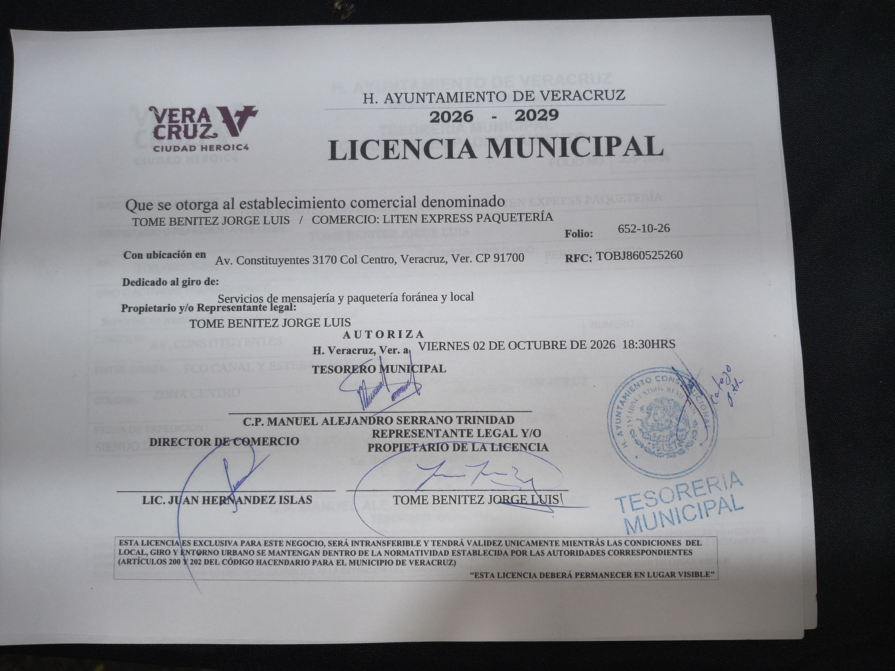
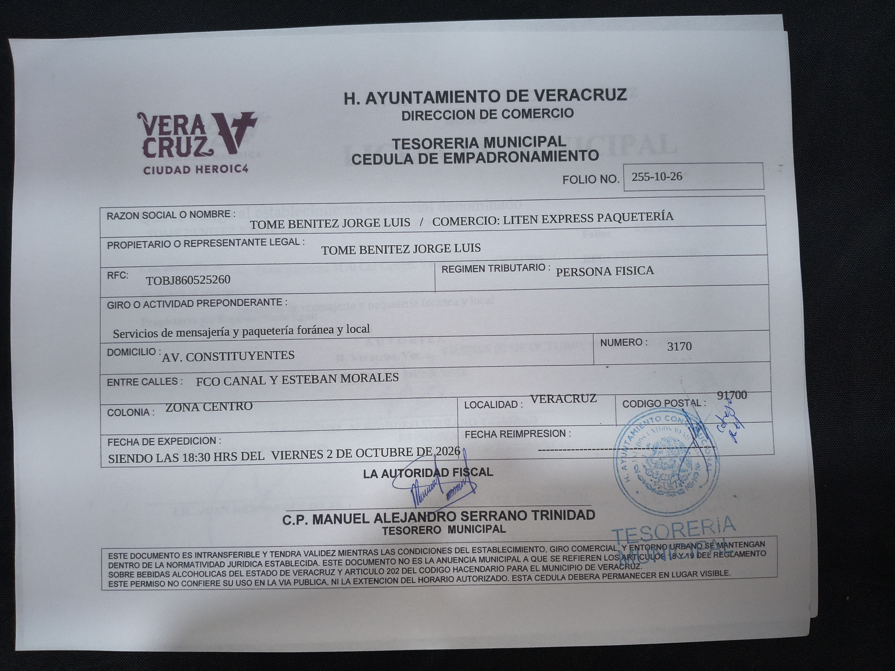

Acerca de Liten Express
Somos un centro logístico y operativo establecido físicamente en el corazón de Veracruz. Nos especializamos en brindar soluciones de paquetería, embalaje y gestoría de envíos tanto a nivel local como nacional.
Nuestra Operativa Física
A diferencia de un negocio exclusivamente digital, Liten Express opera desde una sucursal física donde recibimos, inspeccionamos y embalamos mercancía comercial cumpliendo con los estándares de las paqueterías más grandes del país (DHL, FedEx, Estafeta). Además, ejecutamos nuestro servicio de compras locales ("Mandado Jarocho") directamente desde mercados tradicionales, garantizando transparencia a nuestros clientes mediante videollamadas antes de cada envío.
Respaldo y Legalidad Comercial
Operamos bajo estricto cumplimiento de las normativas comerciales mexicanas. Nuestro establecimiento cuenta con los permisos y licencias vigentes emitidos por las autoridades municipales correspondientes, garantizando un servicio legítimo, seguro y profesional.
Razón Social / Titular: Jorge Luis Tome Benitez (RFC: TOBJ860525260)
Nombre Comercial: Liten Express Paquetería
Domicilio Fiscal y Operativo: Av. Constituyentes 3170, Zona Centro, C.P. 91700 (Entre F. Canal y E. Morales), Veracruz, Ver.
Licencia Municipal Autorizada: Folio 652-10-26 (H. Ayuntamiento de Veracruz 2026-2029)
Cédula de Empadronamiento: Folio 255-10-26
Licencia Municipal Oficial

Cédula de Empadronamiento
